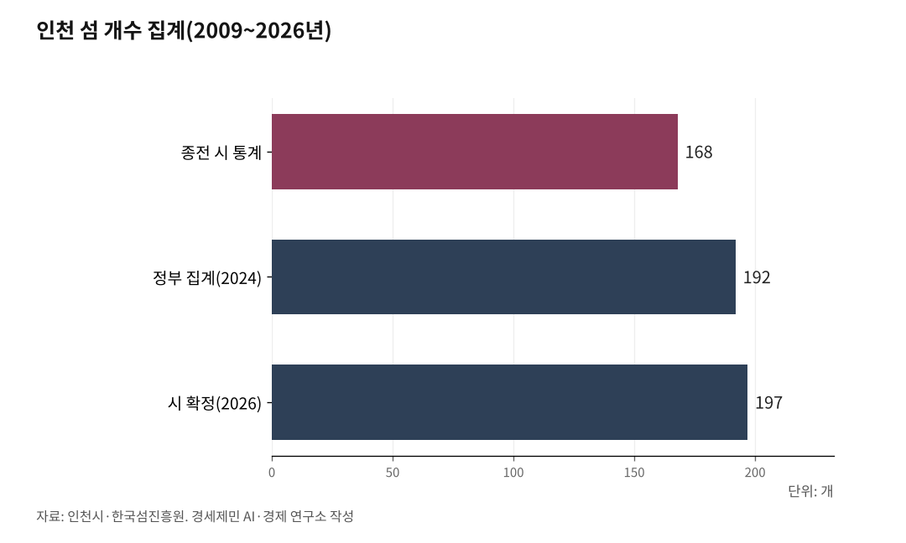
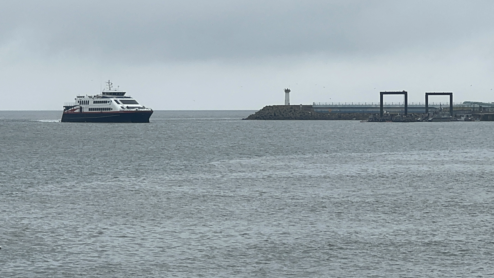

[인천해양주권①] 인천 섬 197개 확정, 남은 것은 바다 경계다
시도 간 해상경계 미획정, 골재와 어업권과 해상풍력 갈등 되풀이
헌법재판소 2015년 국가기본도 해상경계선 규범적 효력 부정
인천 해상풍력 12개 단지 추진, 그어진 선 없이 사업 진행
AI경제저널=김갑봉 기자 | 인천시가 섬을 197개로 확정했다. 유인섬 40개, 무인도 157개다. 섬을 세는 일이 왜 관할을 정하는 일인지를 사실로 짚는다.

섬을 세는 일이 관할을 정하는 일이다
인천시는 2026년 9월 1일 인천 섬을 197개로 확정했다고 밝혔다. 종전 통계는 유인섬 40개에 무인도 128개를 더한 168개로, 2009년에 정리한 뒤 그대로 둔 값이다. 시는 해수부 시스템과 교차 분석해 무인도 29개를 반영했고, 시스템에 없는 섬 5개는 추가 등재를 요청했다.
정부 집계와 어긋난 것이 정비 계기가 됐다. 한국섬진흥원과 행정안전부와 해양수산부는 2025년 8월 8일 섬의 날에 2024년 말 기준 유인섬 현황조사 결과를 내면서 인천 섬을 192개로 집계했다. 유인섬 40개에 무인도 152개를 더한 값으로, 시 통계와 24개가 벌어져 있었다.
숫자가 어긋나는 일은 통계 문제로 그치지 않는다. 국가를 이루는 셋이 국민과 영토와 주권이듯, 지방자치를 이루는 셋은 주민과 관할구역과 자치권이고, 섬은 강화군과 옹진군이 바다에서 자치권을 행사하는 기준점이 된다. 박광근 시 해양항공국장은 통계 정확도를 높여 정책 근거를 명확히 했다고 밝혔다.

인천 바다에 그어진 선은 지도에만 있다
기준점을 세워도 선은 아직 없다. 지방자치법 제5조 제1항은 지방자치단체 명칭과 구역을 종전과 같이 한다고 정하는데, 헌법재판소는 이 기준이 최초로 제정된 법률조항까지 순차 거슬러 올라간다고 봤다. 그래서 1948년 8월 15일 당시 경계가 원천적인 기준이 된다.
그 시점 경계를 담은 것이 조선총독부 육지측량부 지형도다. 이 해상경계선은 해방 뒤 국토지리정보원이 발행한 국가기본도에 대부분 옮겨 실렸는데, 빈칸이 많은 것이 문제다. 옹진군과 태안군이 다툰 사건 변론에서 해상경계선이 제대로 표시되지 않은 지형도가 약 23%로 드러났다.
국토지리정보원은 같은 사건에서 영해구역에 지방자치단체 관할구역 경계선이 획정되어 있지 않다고 확인했다. 조대현과 송두환 두 재판관은 반대의견을 냈다. 영해구역에는 1948년 8월 15일 당시에도 그 전후에도 관할구역이 정해진 적이 없다는 것이다.
헌법재판소가 지운 선
인천은 이 문제로 이미 4년을 썼다. 태안군수는 2004년 5월 10일 가덕도 해역에 바다골재 377만6000㎥ 채취를 허가하고 점용료와 사용료로 31억7238만6000원을 부과했다. 그해 12월 15일에는 선갑도 해역에 38만7000㎥ 채취를 허가하고 9억8530만2000원을 매겼다.
옹진군은 2005년 5월 31일 권한쟁의심판을 청구했다. 헌재는 4년 2개월 뒤인 2009년 7월 30일 2005헌라2 결정으로 쟁송해역 관할권한이 옹진군에 있음을 확인했다. 근거는 국토지리정보원이 발행한 국가기본도 해상경계선이었다.
근거가 6년 뒤 사라졌다. 헌재는 2015년 7월 30일 홍성군과 태안군 사건인 2010헌라2 결정에서, 국가기본도상 해상경계선은 실지측량 없이 섬 소속만 알아보게 표시한 것에 불과하다고 봤다. 선례는 그 견해에 저촉되는 범위에서 변경됐다.
대신 형평의 원칙을 세웠다. 헌재는 지리상의 자연적 조건과 관련 법령의 현황과 연혁적인 상황, 행정권한 행사 내용과 사무 처리의 실상, 주민의 사회·경제적 편익을 종합해 획정하겠다고 밝혔다. 이진성 재판관은 법령상 근거 없이 관할구역을 새로 창설한다는 반대의견을 냈다.

경계가 없어 치르는 값
값을 치르는 자리가 인천 앞바다에 있다. 경기 안산시 풍도 남쪽 15.8㎢ 해역에서 해상풍력 사업자가 2026년 6월부터 사전 행정절차를 시작했는데, 이 해역에서 인천 옹진군 자월면 승봉도까지 거리는 7㎞다. 인천 어민들도 그 주변에서 조업하지만 설명회 대상에서 빠졌다.
사업자는 예정지가 옹진군 관할 해역이 아니라고 주장했다. 그러나 옹진군과 안산시 사이 바다에는 법으로 그어진 해상경계선이 없다. 사업자는 인근 지자체 해안선에서 등거리 기준을 적용해 경계를 스스로 정하고, 그 선을 바탕으로 어민 보상 절차를 밟았다.
같은 다툼이 늘어날 자리는 이미 깔려 있다. 인천에서는 사업자 9곳이 해상풍력 발전단지 12개 개발을 추진하고, 일부 예정지는 인천과 충남 사이 해역에 놓여 있다. 국립목포대 박성현 교수는 해상경계를 행정구역 문제가 아니라 해양정책과 지방분권 기반으로 봐야 한다고 밝혔다.
섬이 많을수록 셈은 복잡해진다
섬이 많다는 사실이 유리하게만 작용하지 않는다. 헌법재판소 헌법연구관 승이도는 2020년 헌법학연구에 실은 논문에서, 두 지방자치단체 사이 등거리 중간선 위에 한쪽 관할 섬이 있으면 딜레마가 생긴다고 짚었다. 형평의 원칙을 적용해도 섬 앞에서 셈이 갈린다는 것이다.
그 섬을 기점에 넣으면 섬과 상대 육지를 잇는 중간선으로 경계가 그어져 상대 관할해역이 크게 수축되거나 닫힌다. 넣지 않으면 섬 주변 해역 상당 부분이 상대 관할로 넘어가 섬 주민 편익이 훼손된다. 헌재는 2019년 4월 11일 고창군과 부안군 사건에서 중간선을 먼저 긋고 조정했다.
인천 섬 197개가 선 자리가 바로 그 지점이다. 시는 해수부 시스템에 없는 섬 5개 등재를 요청했고, 시 섬해양정책과는 제5차 섬발전종합계획 때 섬 개수가 어긋나지 않게 협의하겠다고 밝힌 바 있다. 계획 기간은 2028년부터 2037년까지다.
섬 197개는 확정됐다. 그 섬들이 딛고 선 바다에 선을 어떻게 그을지는 아직 정해지지 않았다.
※ 이 기사는 AI 프로그램 클로드를 활용해 작성했습니다.
참고문헌
·헌법재판소(2009), "옹진군과 태안군 등 간의 권한쟁의", 전원재판부 2005헌라2, 2009.7.30. https://www.law.go.kr/LSW/detcInfoP.do?detcSeq=137768&mode=2
·헌법재판소(2015), "홍성군과 태안군 등 간의 권한쟁의", 전원재판부 2010헌라2, 2015.7.30. https://www.law.go.kr/LSW/detcInfoP.do?detcSeq=47255&mode=2
·헌법재판소(2019), "고창군과 부안군 간의 권한쟁의", 전원재판부 2016헌라8, 2019.4.11. https://www.law.go.kr/LSW/detcInfoP.do?detcSeq=150761&mode=2
·승이도(2020), "지방자치단체 사이의 해상경계 획정에 관한 헌법재판소 권한쟁의심판 연구", 『헌법학연구』, 26(2), 205-268. https://www.kci.go.kr/kciportal/ci/sereArticleSearch/ciSereArtiView.kci?sereArticleSearchBean.artiId=ART002608564
·한국섬진흥원·행정안전부·해양수산부(2025), 『2025년 유인섬 현황조사』, 2025.8.8. https://mnuk2.mokpo.ac.kr/bbs/islands/382/277024/artclView.do
·이형성(2026), "인천 섬 197개 '확정'··· 정부 통계와 '엇박자' 오류 개선", 『인천투데이』, 2026.9.1. https://www.incheontoday.com/news/articleView.html?idxno=322953
·조경욱(2026), "[경인 WIDE] 인천 앞바다 개발 '선' 없어 피해보는 섬", 『경인일보』, 2026.8.9. https://www.kyeongin.com/article/1768676
·이종선·인투아이(2025), "대한민국 섬 3390개 첫 공표... 전남 가장 많고 인천 192개 4위", 『인천투데이』, 2025.8.8. https://www.incheontoday.com/news/articleView.html?idxno=306479
※ 이 기사는 인공지능을 활용해 작성했습니다.
관련기사
- [인천해양주권④] 김대중 구상 노무현 설립 지역항만공사, 이재명 정부가 걷어차
- [인천해양주권②] 서해 영해기점 마지막은 인천 섬 소령도, 그 위는 확정된 선이 없다
- [인천해양주권③] 남북 경계 미확정이 중국에 틈을 준다
- [인천해양주권⑤] LH 분리 PA 통합 '원칙 없는 행정'... 지지율은 최저 기록
저작권자 © AI경제저널 무단전재 및 재배포, AI학습 및 활용 금지